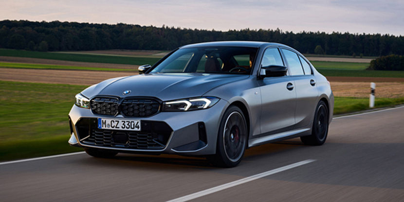
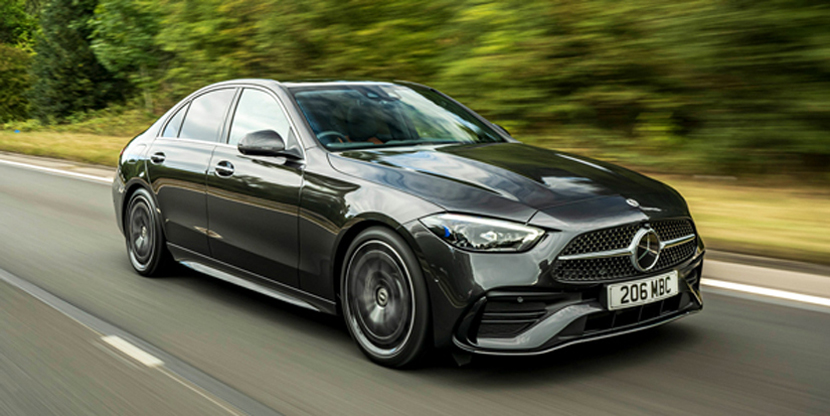

BMW and Mercedes-Benz are two of the top European sports and luxury auto manufacturers. They have a wide range of vehicles on the market, from powerful sports cars to subcompact SUVs. These two brands compete in just about every segment – sometimes with two or even three models vying for the top spot in a vehicle class. In this article, we have looked at the cars and SUVs BMW and Mercedes-Benz have on the market today and compare them, class by class. We looked at price, overall scores, U.S. News rankings and reviews, and critics’ expert opinions of these vehicles. We also took into account the standard and available equipment for each class, as well as trim levels and performance options. After taking all of this into account across 10 segments, we were able to determine which was the better of these two German luxury car brands. Keep in mind that our rankings and reviews are constantly updated as new information becomes available. This means the scores and data used for this article may not reflect what is currently on our website. All zero-to-60-mph times listed are provided by the manufacturers. Read on to learn which of these iconic luxury automakers wins.
 